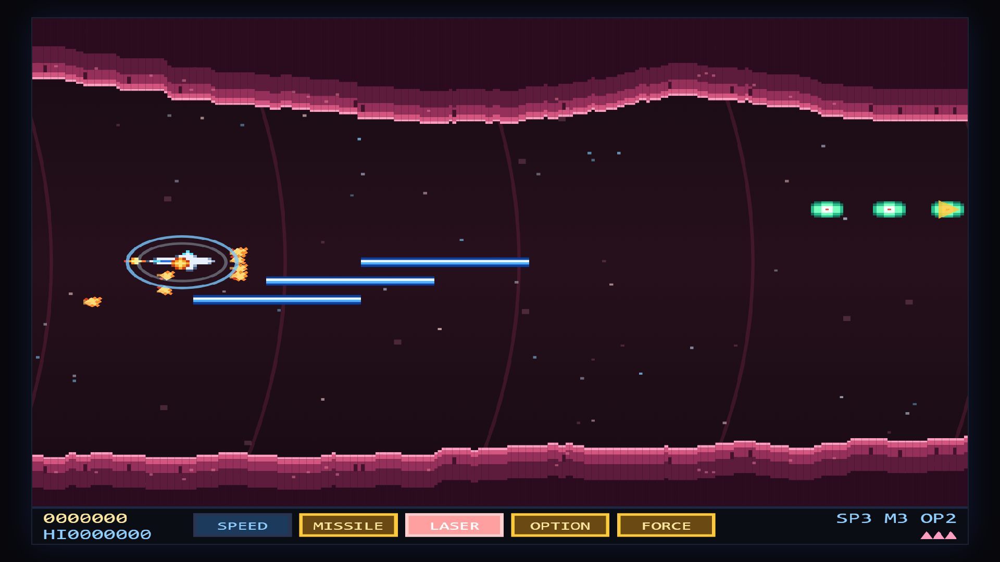
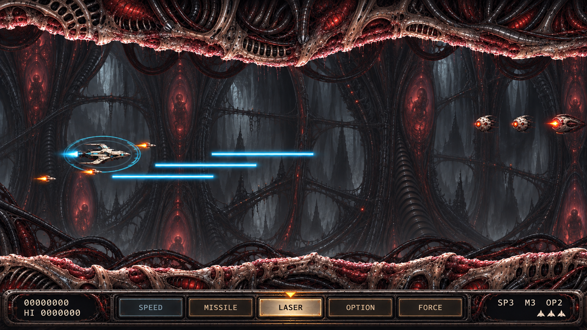
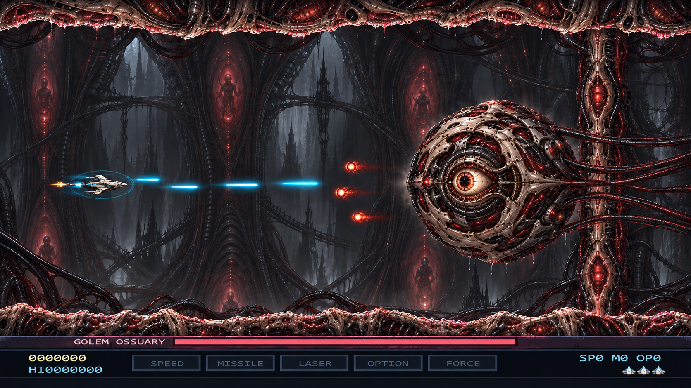

Zoe Force: first painted 2D concepts
Approved by santi — September 28, 2026. These four images were generated with the built-in imagegen tool from the captured game screens. They are full-screen mockups; the painted upgrade is now implemented locally. The running game uses separate replaceable art assets and live UI.
Giger-inspired biomechanical architecture, Life Force corridor structure, detailed machinery and smooth painted 2D sprites. Screen-left means decreasing X; screen-right means increasing X. The player ship’s nose faces screen-right in these horizontal-stage concepts.

02 · Gameplay HUD
Review the five-slot power meter, selected Laser state, score and lives. Final text will be rendered live by the game.



03 · Bio-Cathedral
Review the bone/metal/tissue architecture, painted finish, ship and enemy silhouettes, and contrast behind projectiles.

04 · Golem Ossuary
Review the circular armored body, central eye weak point, rear chamber tethers and separation of hostile fire. Final boss UI will use the approved HUD design.



Approved direction
Santi approved all four designs. View actual screenshots of the implemented six-stage build.
Painted assets, menu/world crossfades and the replacement guide are implemented.